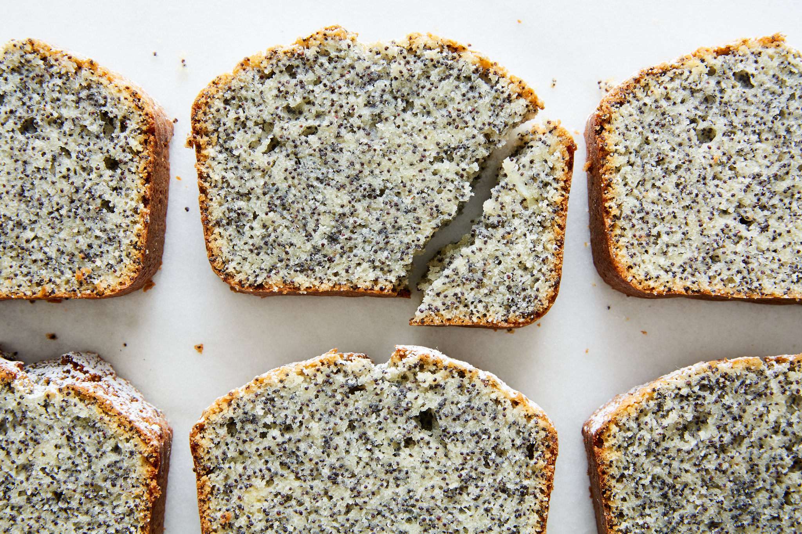

Mohnkuchen

Über das Rezept
Das Andy Lorenz Mohnkuchen Rezept, von dem man sagt es könne den Weltfrieden widerherstellen.
Saftig, Lecker, einzigartig, anders kann es nicht beschrieben werden.
Danke Andy.
Das Rezept
Zutaten
- 340g Butter
- 160g Zucker
- 2 Eier
- 8 Eigelb
- 6 Eiweiß
- 500g Dr.Oetker Mohnback
- 2EL Mehl
Arbeitsablauf
- Ofen auf 160°C Umluft vorheizen
- Butter und Zucker aufschlagen, bis der Zucker aufgelöst ist.
- Eier und Eigelb nach und nach dazugeben, bis eine glatte Masse entsteht.
- Mohn dazugeben
- 2EL Mehl dazugeben
- Eiweiß steifschlagen und in 3 Schtitten vorsichtig unterheben
- 1/2 GN mit Backpapier auslegen
- Teig hineingeben und glattstreichen
- In den Ofen auf mittlerer Schiene für 30-45min Backen
- Rausholen und auskühlen lassen
Home